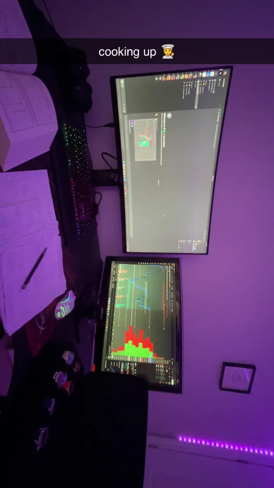

E-Portfolio
My name is Nicholas Jordan Mincu. I'm a 19-year-old Romanian man, and I'm currently a communication student focused on learning how to understand, teach, and lead people effectively. Especially with the upcoming surge of artificial intelligence, I believe that traditional listening, persuasion, and leadership skills will become some of the most valuable abilities. The communication program's flexible electives also let me explore math and analytical subjects, which complement my interest in making cold, analytical decisions.
I've always believed that money is the most powerful tool because of the way society is designed. As such, I want to learn skills that will help me generate wealth, whether under others or in a leadership position. This persuaded me to choose a broader program that allows me to study important financial and strategic skills. Another reason I pursue math electives is to strengthen my abilities in finance and strategy, which I apply in stock trading and business endeavors. I have been trading for over three years now, beginning by advising older friends from the United States on what stocks to invest in, receiving commissions in return.
Since I already trade successfully and enjoy teaching peers about investing, my short-term goal is to formalize those skills and be paid to teach others sound investment practices. Ultimately, my goal is to create a stable, comfortable life with a wife, three kids, and possibly pets. I plan to achieve this through building businesses in developing countries, such as my home country of Romania. I also want to explore deeper meaning through religion, science, and philosophy in my own time. I'm excited and grateful for the chance to work on these skills and turn my ideas into practical outcomes for a happy and thoughtful life with family and friends.

Name: Nicholas Jordan Mincu
Current Degree Program: Honours Bachelor of Communication
Intended Degree Program: Honours Bachelor of Commerce (Finance) with a Minor in Mathematics
Total Credits: 120
Elective Credits: 39 (9 remaining after minor requirements)
Minor Credits: 30
As a communication undergrad, after thorough consideration, I've made the decision to switch to commerce majoring in finance with a minor in mathematics. However, as I've taken some courses before I will list those first and create the new degree plan as a restart more or less.
Year 1 - Fall
Year 1 - Winter
Year 2 - Fall
Year 1
Fall Semester
Winter Semester
Year 2
Fall Semester
Winter Semester
Year 3
Fall Semester
Winter Semester
Year 4
Fall Semester
Winter Semester
Summer: MFE Preparation
Here are some academic works I'm particularly proud of that showcase my interdisciplinary approach to finance, economics, and technology.
AHL1100 Midterm - October 2025
As the finance world evolves, the strategies to maximize profits grow equally as quickly. In modern quantitative finance, algorithms make up over 70% of U.S. equity trading volume, showing clear domination in global markets. Quant hedge funds largely depend on complex artificial intelligence models to predict trades and manage portfolios for maximization of profits. However, these models can often have hidden biases from their training data, which can cause unintended volatility in markets and even ethical concerns. A strong and recent example is the 2010 Flash Crash that wiped out nearly $1 trillion in market value from existence within minutes due to an algorithmic feedback loop. Combining the two disciplines of computer science and behavioral economics can strongly reduce algorithmic bias and help build fairer financial systems.
ENG1100 Final Paper - December 2025
Most Canadians don't realize inflation acts like a hidden tax on people who hold cash. The money they hold dearly, although not dropping in amount, drops in value as the country creates more cash for itself. This misunderstanding that people often overlook shows us a clear issue, being widespread financial illiteracy in Canada, specifically within the middle class, keeping them there. Many Canadians struggle with saving, debt, and investing. All of which continue to weaken the Canadian middle class keeping the wider economy stagnant. Even worse, despite Canada being a well-developed country, it has a relatively low financial knowledge, shown by its stagnant growth. This is caused by the younger generations of people entering adulthood without skills in any form of finance. This low financial literacy not only has correlation but is a clear causation of poor saving, investment, and retirement planning because financial knowledge is human capital necessary for economic participation (Lusardi & Mitchell 2014). This paper argues that mandatory financial literacy education is essential because it helps individuals build strong lifelong habits, develop the skills needed for long-term financial success, and benefit from learning these skills early on in order to maximize their financial growth, stability, and well-being.
LinkedIn: www.linkedin.com/in/nicholas-jordan-mincu
Email: Nicholas.mincu@gmail.com
Finance is the study of individuals, firms, and institutions allocating capital under uncertainty through the use of quantitative methods (portfolio theory, risk modelling), statistical inference, and empirical testing, mainly originating from economics and actuarial science, with more modern foundations in Markowitz (1952), Fama (1970), and Black-Scholes (1973). Finance helps provide structured and data-driven tools for evaluating investments through its strong–as previously mentioned–methodological framework, using modern portfolio theory, risk measurement, and diversification.1 Allowing the creation of predictive models for pricing risk and returns; specifically, finance helps conceptualize markets as information-efficient, which means that the market is a perfect reflection of the information available to all the players in that market. It additionally helps optimize portfolios through diversification and risk-adjusted measurements, which are all directly practical and applicable in portfolio management.2 However, with its many strengths, it's equally critical to note that models depend on assumptions in finance of rationality and normally distributed returns in an efficient market, creating blind spots around behavioural finance and market irrationality, which is a largely debated topic in finance.3 The topic of market inefficiency versus market efficiency is the main separator of many quant traders searching for arbitrage to profit in the market. Additionally, there is a large overreliance on these models that can understate rare or extreme events, known as black swans, creating large losses and disproving otherwise profitable models. This can bring up the question of whether the market is even able to truly generate a profit, if it has directionality at all, or even if the market can be modelled altogether, all interesting topics on their own.4
Economics is the study of scarcity, incentives, and the production and distribution of goods and services, using theoretical modelling, econometrics, policy analysis, and statistical inference5 mainly rooted in classical thinkers (Smith, Ricardo) and modern macroeconomics (Keynes, Friedman). Economics has the ability to create a macro-level understanding, which is essential for financial forecasting, and it also provides frameworks for incentives, rational choice, and market equilibrium, all key concepts for a quantitative portfolio manager role.6 Specifically, looking at econometrics, it provides powerful tools that allow for empirical prediction, which relies on real-world data and past observations to make forecasts instead of using purely theoretical models, helping gauge market values and fairness, or even forecasting future outcomes. While economics has powerful tools, it also has root problems, such as the overly simplified assumptions about rational behaviour, whereas the truth of the market is that psychological forces constantly disrupt macroeconomic predictions, weakening economics' credibility due to its reliance on rationality.7 A more in-depth look at the problem would be the predictive models, which mainly rely on real-world data, as mathematical models are too theoretical, often failing under rapid structural change of the market, especially with the reality that these models are created based on historical data sets, which can only show what has happened and are not an indication of what will happen. With these major disagreements, different theoretical schools of economics lead to interpretive inconsistencies, creating an overall gap in credibility and reliability, as the entire study is an ununified front. Yet, its roots in society remain largely present, as it does have overall usage advantages for both the consumer and business worlds.
Mathematics, the oldest and most fundamental of the three, is the study of patterns, structures, and quantitative relationships, using formal systems, proofs, modelling techniques, probability theory, and optimization in all categories, originating in classical geometry and calculus; modern applications include stochastic processes and numerical methods. Compared to the relatively simplistic models of finance and economics without mathematics, mathematics offers unparalleled rigor and precision for the modelling of these financial systems.8 The foundation of quantitative finance is advanced mathematics for option pricing, stochastic calculus, optimization, and a central role in derivatives pricing.9 With all of mathematics' uses in both finance and economics, as the foundation and structuring of most modern financial modelling10, it's equally important to note its universal applicability, as mathematics applies frameworks across many different jobs and contexts, allowing for it to be a highly interdisciplinary discipline. However, it's essential to note that the abstraction of mathematical models can also remove real-world detail or behavioural nuance, like with the assumption that the market is completely rational in the efficient market hypothesis, creating limitations of models under extreme market conditions11 where, in events like the 2008 market crash, the pricing was completely imbalanced due to the fear factor of the stock market dropping so drastically. The models created by mathematics can often oversimplify discontinuities or tail events, which are the main cause of losses for systems, disproving their profitability and disagreeing with finance's heavy model dependence.12 Additionally, mathematics is a much more technically and mentally demanding discipline, requiring high technical skill, making it less accessible to the general populace compared to finance and economics.
Through these three disciplines, a final integrative, interdisciplinary synthesis shows how finance, economics, and mathematics create one combined analytical lens, allowing them to tie their strengths together and avoid their individual weaknesses. An integration of finance with economics is crucial as economics explains macroeconomic conditions, incentives, and market structure –all powerful, decisive tools for finance, which converts these insights into actual investment decisions, producing profits from theory and application. Together, they strengthen both forecasting and strategic planning. Finance relies heavily on mathematics, as it applies the tools mathematics provides, all the while finance applies them to real-world data. Quantitative models, a benchmark in the finance industry, require optimization, calculus, and probability –all of which are tools provided by mathematics. Simply put, their integration is foundational, as without math, finance would not be able to produce risk models or even pricing formulas, creating a clear visual that mathematics is a required integration for finance. Economics also needs the integration of mathematics, as econometrics and statistical modelling merge theory from both mathematics and economics with quantitative validation, allowing for a mathematical measure of success in an otherwise probabilistic market. While economic insights are powerful predictive tools, without mathematics, they are simply stabs at a much larger problem, proving mathematics' high usage rate in strengthening the precision of economic insights. For future quantitative portfolio managers, it is essential to have mathematically rigorous modelling of finance, the macro-structural understanding from economics, and the theoretical foundations of mathematics. The interdisciplinarity of the three allows for the prevention of narrow thinking and relying solely on one over the other, concluding that the combined power forms a unique advantage of holistic market interpretation, forecast accuracy, and strategic uncertainty management.
1 Bodie, Zvi, Alex Kane, and Alan J. Marcus. Investments. 10th ed. New York: McGraw-Hill, 2013.
2 Fama, Eugene F. "Efficient Capital Markets: A Review of Theory and Empirical Work." Journal of Finance 25, no. 2 (1970): 383–417.
3 Ibid.
4 Bodie et al., Investments.
5 Mankiw, N. Gregory. Principles of Economics. 9th ed. Boston: Cengage Learning, 2021.
6 Ibid.
7 Akerlof, George A., and Robert J. Shiller. Animal Spirits: How Human Psychology Drives the Economy. Princeton: Princeton University Press, 2009.
8 Shreve, Steven E. Stochastic Calculus for Finance I: The Binomial Asset Pricing Model. New York: Springer, 2004.
9 Hull, John C. Options, Futures, and Other Derivatives. 11th ed. London: Pearson, 2023.
10 Shreve, Steven E. Stochastic Calculus for Finance I.
11 Hull, John C. Options, Futures, and Other Derivatives.
12 Ibid.
Akerlof, George A., and Robert J. Shiller. Animal Spirits: How Human Psychology Drives the Economy. Princeton: Princeton University Press, 2009.
Bodie, Zvi, Alex Kane, and Alan J. Marcus. Investments. 10th ed. New York: McGraw-Hill, 2013.
Fama, Eugene F. "Efficient Capital Markets: A Review of Theory and Empirical Work." Journal of Finance 25, no. 2 (1970): 383–417.
Hull, John C. Options, Futures, and Other Derivatives. 11th ed. London: Pearson, 2023.
Mankiw, N. Gregory. Principles of Economics. 9th ed. Boston: Cengage Learning, 2021.
Shreve, Steven E. Stochastic Calculus for Finance I: The Binomial Asset Pricing Model. New York: Springer, 2004.